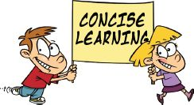

Once you start getting those As you’ve been aiming for, don’t forget to keep your desire to learn alive and strong. Successful students and leaders keep their minds open to new things because they know there is always more to discover and learn, no matter how much they know.
Finally, part of being a good learner is to give back to others who are trying to learn. Share with others what you’ve learned and also share with them how you learn. It will make a world of difference to others and to you.
You’ll find many free resources at
www.conciselearning.com, including:
These and other features will be very useful to you and will keep you in touch with others who share your passion for learning and success.
If there are ways to make the Web site even more useful or if you would like to see new features, please let me know about them.

Please tell others who could benefit from this book. They’ll thank you for it.
I’m taking the CLM to schools nationwide. The one-day workshop is taught entirely by me and gives you an opportunity to learn CLM in a face-to-face setting.
The events schedule is available at
http://conciselearning.com/studentsuccessworkshop.html.
My primary goal is to serve my readers as well as I possibly can. For that to happen, I need to hear from you regarding your experience with CLM.
I’d love to hear your feedback, ideas, questions, comments, successes, struggles, suggestions, or anything else that’s on your mind. I can be reached at profTK@conciselearning.com. You can also follow me on Twitter at
www.twitter.com/conciselearning
I hope to continue to serve you and learn from you for many years to come.